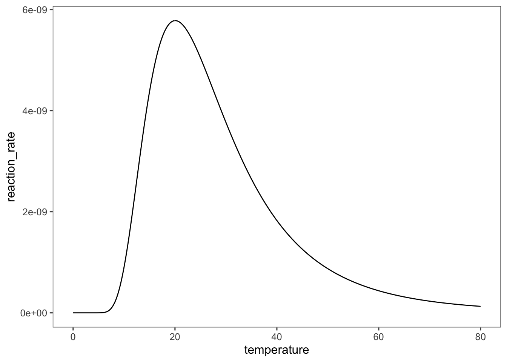

1 Chemical Reactions: Stoichiometry and Rates
Chemical reactions are critical to life and critical to the production of food, fuels, materials, chemicals, and pharmaceuticals. Bioprocess Engineers utilize this intersection to produce these valuable and necessary commodities in a cheaper, less resource and energy intensive, lower risk, and more sustainable way. This is done by harnessing the lifeforms that perform valuable chemical reactions and engineering systems to scale up the production of these valuable chemicals for commercial use.
Before we can delve into engineering chemical reactions we must first develop the ability to quantify chemical reactions.
1.1 Stoichometry
The stoichiometry of a chemical reaction tells us what chemical species are consumed and formed in a reaction and in what proportions. Stoichiometry is the basis of our ability to quantify a chemical reaction
Consider the chemical reaction: \[ \require{mhchem} \require{mhchem}\ce{Cl2 + C3H6 + 2NaOH -> C3H6O + 2NaCl + H2O} \] It is important to check that this reaction equation is balanced, and therefore satisfies the law of conservation of matter. We will check that this equation is balanced as a review.
Remembering your general chemistry, in order to write a balanced chemical equation the chemical elements must be conserved, i.e. for each chemical element \(j\) \[\sum_{j} \nu_j N_j = 0\] where \(\nu_j\) is the stoichiometric coefficient for each chemical species containing the element and \(N_j\) is the number of molecules of the element in species \(j\).
Within this equation there is a critical convention: The coefficients of the products of a reaction are positive, and the coefficients of the reactants are negative.
So for the reaction above we can make a table for each chemical species and element:
| \(\nu_j N_j\) | \(\require{mhchem}\ce{Cl2}\) | \(\require{mhchem}\ce{C3H6}\) | \(\require{mhchem}\ce{NaOH}\) | \(\require{mhchem}\ce{C3H6O}\) | \(\require{mhchem}\ce{NaCl}\) | \(\require{mhchem}\ce{H2O}\) | \(\sum_{i}\) |
|---|---|---|---|---|---|---|---|
| \(\require{mhchem}\ce{Cl}\) | -1 * 2 | 0 | 0 | 0 | 2*1 | 0 | 0 |
| \(\require{mhchem}\ce{C}\) | 0 | -1*3 | 0 | 1*3 | 0 | 0 | 0 |
| \(\require{mhchem}\ce{H}\) | 0 | -1*6 | -2*1 | 1*6 | 0 | 2 | 0 |
| \(\require{mhchem}\ce{Na}\) | 0 | 0 | -2*1 | 0 | 2*1 | 0 | 0 |
| \(\require{mhchem}\ce{O}\) | 0 | 0 | -2*1 | 1 | 0 | 1 | 0 |
You may have used this stoichiometric notation in thermodynamics to calculate the standard Gibbs free energy or standard enthalpy change of a reaction.
This balanced stoichiometric equation tells us then that for every mole of \(\require{mhchem}\ce{Cl2}\) consumed, one mole of \(\require{mhchem}\ce{C3H6O}\) will be formed, as long as there is sufficient \(\require{mhchem}\ce{C3H6}\) and \(\require{mhchem}\ce{NaOH}\). But how can we figure out if there are sufficient quantities of the other reactants? How can we figure out which reactant is limiting?
1.2 Quantifying the Progress of a Reaction
1.2.1 Extent of Reaction
The extent of reaction is a measure of how far a reaction has progressed at any point in time. To define the extent of reaction we will use the example of a simple batch reactor, imagine a beaker containing fixed amounts of chemicals which are reacting. To define how far the reaction has progressed we start by defining the change in each chemical species throughout the reaction.
At the start of the reaction there are \(N_{i0}\) moles of each \(i\) species in our reaction. At time \(t\) the number of moles of species \(i\) is defined as \(N_i\). We can then define the change in species \(i\) as \(\Delta N_i = N_i - N_{i0}\).
The extent of reaction is a property of the whole reaction not each individual species. So to convert the change in moles of any species, to the extent to which the reaction has progressed, we divide the change in moles of species \(i\) by its stoichiometric coefficient, i.e. \[\xi = \Delta N_i/\nu_i\]
1.2.1.1 ???Questions???
Is the extent of reaction for reactants positive or negative? Is the extent of reaction for products positive or negative?
The extent of reaction can also be defined for steady state open systems \[\xi = \Delta F_i/\nu_i\]
1.2.2 Limiting Reactant
The limiting reactant is the reactant that is completely consumed in the reaction and prevents the reaction from progressing any further. Therefore the limiting reactant, \(l\), defines the maximum extent of the reaction, i.e., \[\xi_{max} = -N_{l0}/\nu_l\]
We can find the limiting reactant by calculating the maximum extent of reaction for each reactant species in the reactor. The limiting reactant has the lowest extent of reaction, i.e. it runs out first if the reaction goes to completion. In reversible reactions, equilibrium will be reached prior to completion and \(\xi\) will always be less than \(\xi_{max}\).
1.2.3 Fractional Conversion
The fraction of the limiting reactant that has been consumed is also frequently used to quantify the progress of a single reaction. This fractional conversion is defined as: \[x_l = \frac{N_{l0} - N_l}{N_{l0}} = 1 - \frac{N_l}{N_l0} \label{eq:frac-conv}\] For a constant volume/density system conversion can also be defined in terms of concentration. \[\frac{C_{A0} - C_{A}}{C_{A0}} = x_A = 1-C_A/C_{A0}\] \[\therefore C_A/C_{A0} = 1-x_A\]
1.3 Reaction Rates: Quantifying the Dynamics of a Reaction
1.3.1 Species-dependent Reaction Rate
To be useful in designing reactors the reaction rate must be an intensive variable—independent of the size of the reactor. The reaction rate is typically defined in terms of one of the reactants or products of the reaction. The reaction rate is defined as: \[r_i \equiv \text{rate of formation of product }i \frac{\text{ (moles }i \text{ formed)}}{\text{(unit time)(unit reactor)}}\] or \[-r_i \equiv \text{rate of disappearance of reactant }i \frac{\text{ (moles }i \text{ consumed)}}{\text{(unit time)(unit reactor)}}\]
Reaction rates by convention are always positive. We indicate the reaction rate with respect to a reactant by multiplying by \(-1\). This allows us to use the stoichiometry of the reaction to convert reaction rates between species in a reaction, for a stoichiometrically-simple reaction, e.g.
\[ r_1/\nu_1 = r_2/\nu_2 = r_3/\nu_3 = ... = r_i/\nu_i\]
If multiple reactions are taking place the rate of each reaction must be known to calculate the total rate of formation/disappearance of a species: \[r_i = \sum_{k=1}^{R}r_{ki}\] where \(R\) is the number of independent reactions taking place and \(k\) is the specific reaction.
1.3.2 Species-independent Reaction Rates
We can make the reaction rate independent of the species for which it was calculated, and referenced to the reaction itself, by dividing the species-dependent rate by the stoichiometric coefficient for that species in the reaction. \[r \equiv r_i/\nu_i\]
This form of the reaction rate has the advantage of preventing confusion about the rate for one reactant being different from another, but does require that the chemical equation that the rate describes be defined. For example the value of \(r\) would be different for the following two equations \[\require{mhchem}\ce{N_2 + 3H_2 <=> 2NH_3}\] \[\require{mhchem}\ce{1/2N_2 + 3/2H_2 <=> NH_3}\]
However, \(r_{N_2}\) would be the same for the two reactions, and \(3r_{N_2} = r_{H_2}\). Fortunately, this species-independent form of the rate equation is rarely used for biochemical reactions. We present it here mostly as a reminder to always check the stoichiometry of the reaction and the units of the rate for consistency, particularly when using data from the literature. This is especially important as for biochemical reactions the symbol \(v\) for velocity of reaction instead of \(r\) for rate. Velocity is frequently defined in terms of the primary product of the reaction, but always check to make sure, subscripts are rarely used to specify how velocity is defined.
1.3.3 Rate Equations
Now that we have defined reaction rates, how do we quantify them? We might suspect, or know from basic chemistry that a reaction is dependent on temperature and the concentration of all of the species participating in the reaction. \[r_A \approx f(T, C_i)\] Based on more than a century of studying chemical kinetics we can lay out some generalizations about chemical reactions to help us understand the general form and properties of reaction rate functions.
1.3.3.1 For single reactions that are essentially irreversible, the effects of temperature and concentration are seperable
This can be described mathematically as: \[-r_A = k(T)f(C_i)\] Here, \(k\), the rate constant is a function of temperature \(T\). Most reactions we will deal with as bioprocess engineers are not simple single irreversible reactions, however this generalization is useful in deriving more complicated reaction mechanisms and often provides a useful starting point when designing reactors.
1.3.3.2 The rate constant \(k\) follows the Arrhenius equation
The Arrhenius equation dictates how typical chemical reaction rates depend on temperature. It has the form \[k(T) = Ae^{-E/RT}\] where \(R\) is the gas constant, \(T\) is the absolute temperature, \(E\) is the activation energy, and \(A\) is the pre-exponential factor or frequency factor of the reaction. The Arrhenius equation dictates that the rate of a reaction increases exponentially with temperature. On the molecular level temperature reflects the kinetic energy of the molecules within the reactor. The more kinetic energy the molecules in a reactor have, i.e. the higher the temperature, the more likely they are to collide, or fluctuate, in the correct orientation to undergo the reaction.
Unfortunately, enzymes—the biological catalysts—are polymers held in their catalytic conformation by non-covalent interactions, which are also sensitive to increases in kinetic energy. At high temperatures enzymes will unfold in a process called thermal denaturation. This leads to a temperature optimum for enzymatic reactions which is typified by the graph below. As temperature increases so does the enzyme activity and rate of reaction, but eventually the enzyme begins to unfold and the activity drops.
temperature <- seq(0, 80, 0.1)
A <- 10000
E <- 1000 #(kJ/mole)
R <- 8.314 #(J/mole/K)
K_eq <- 2e-04
reaction_rate <- A * exp(-E/R/temperature)/(1 + K_eq *
(R * temperature)^6)
data <- tibble(temperature, reaction_rate)
require(ggplot2)
ggplot(data = data, mapping = aes(x = temperature,
y = reaction_rate)) + geom_line() We will describe this behavior mathematically later on, when we derive the rate equation for enzymes.
1.3.3.3 \(f(C_i)\) decreases as the concentrations of the reactants decrease
For a given temperature the rate of a reaction will decrease as the concentrations of the reactants decrease. This generalization again is true for most elementary reactions, but is violated in many enzymatic (and other catalytic) reactions, where extremely high substrate concentrations can inhibit some enzymes. We will also discuss this behavior while deriving the rate equations for enzymes.
1.3.3.4 \(f(C_i)\) describes the order of the reaction for each species
This generalization dictates that \(f(C_i)\) can be written as the product of all species raised to their “order” in the reaction. \[f(C_i) \approx \prod_{i} C_i^{\alpha_i} \] where \(\alpha_i\) is the order of the reaction for species \(i\). The order of reaction generally ranges from -2 to 2 (fractional values are permissible). The summation \(\sum_i \alpha_i\) is referred to as the overall order of reaction.
The order of the reaction for a species reflects the sensitivity of the rate of reaction to a change in concentration of species \(i\). If \(\alpha_i = 0\) then the reaction rate is unaffected by the concentration of \(i\). If \(\alpha_i < 0\) then the reaction rate is slowed—or inhibited—by \(i\).
Rate equations which obey this behavior are called power-law rate equations. These equations are grounded in thermodynamics governing molecular collisions between reactants and are often a useful starting point for analysis of kinetic data. Using a power law rate equation to describe the reaction: \[\require{mhchem}\ce{(-\nu_A)A + (-\nu_B)B -> \nu_CC + \nu_DD}\] we would propose that \[f(C_i) = C_A^{\alpha_A}C_B^{\alpha_B}C_C^{\alpha_C}C_D^{\alpha_D}\] The reaction orders cannot be determined from the stoichiometry of a reaction, i.e. \(\alpha_i \ne -\nu_i\). There are many ways to write a balanced stoichiometric equation for a reaction, the coefficients can be multiplied by any number. The reaction order reflects the actual behavior and mechanism of the reaction. We cannot assume to know which balanced equation reflects the mechanism, but we can hypothesize a mechanism and check if kinetic data fits. We will do this in a later section.
In the case that the reaction orders match the stoichiometry of the reaction as written, this reaction is called elementary. Elementary reactions are critical the development of reaction mechanisms and kinetics. We will discuss elementary reactions more in the next section.
Once again, for enzymatic reactions, this generalization does not hold. We will soon see enzymatic reactions are more representative of multiple reactions. This generalization may hold for the individual reactions comprising the enzymatic mechanism. But for the reaction as a whole, we will soon see, the order of reaction varies with substrate concentration.
1.3.3.5 For reversible reactions, the net rate is the difference between the forward and reverse reactions
\[-r_{A,net} = -r_{A,f}-r_{A,r}\] Here \(-r_{A,net}\) is the total rate at which the reaction proceeds and species A is a reactant as the chemical equation is written. The reaction is moving forward, if \(-r_{A,net}\) is positive, because the rate of consumption of A in the forward reaction, \(-r_{A,f}\), is greater than the rate of formation of A by the reverse reaction, \(r_{A,r}\). Don’t forget the convention that rates of reaction are positive and the sign is determined by the stoichiometry of the reaction.
Based on this generalization we can derive the equilibrium expression for a reversible reaction. At equilibrium the net rate of reaction is 0 and we can write out the rates of the forward and reverse reactions according to the order of reaction in each species. \[0 = -r_{A,f} - r_{A,r} = k_f \prod_i C_i^{\alpha_{f,i}} - k_r \prod_i C_i^{\alpha_{r,i}}\]
Rearranging we define the the equilibrium constant, \[ K_{eq}^C = \frac{k_f}{k_r} = \prod_i C_i^{(\alpha_{r,i} - \alpha{f,i})}\]
This was derived completely from the principles of kinetics. An equilibrium constant can also be derived via thermodynamics. As you might remember from thermodynamics: \[K_{eq} = \prod_i a_i^{\nu_i}\] where \(a_i\) is the activity (or “effective concentration”) of species \(i\). This expression for the equilibrium constant depends on the way the stoichiometric coefficients and thus the way the chemical equation is written. For a typical aqueous reaction we can write this equation in terms of concentration \[K_{eq}^C=\prod_iC_i^{\nu_i}\] Comparing the thermodynamic and kinetic definitions of \(K_{eq}^C\) we can see potential for inconsistency depending on how our chemical equation is written. This implies that in order to be thermodynamically consistent we must define the equilibrium constant based on a single balanced chemical equation. By setting the two versions of the equilibrium constant equal, we can define the condition for this correct equation. \[\nu_i = \alpha_{r,i} - \alpha_{f,i}\] Simply, the stoichiometric coefficients must be equal to the order of the total reaction.
1.4 Elementary reactions
The above statment defines an elementary reaction, i.e. the order of the forward reaction with respect to species i is equal to the number of molecules of species i participating in each individual reaction. The same is true for the reverse reaction. So for the simple example reaction \[ \require{mhchem}\ce{2A <=> B} \] the rate of the forward reaction is given by \(-r_{A,f} = k_f C_A^2\), and the rate of the reverse reaction \(r_{A,r} = k_r C_B\). Combining the two rate equations we find the net rate of disappearance of A is \(-r_{A,net}=k_f C_A^2 - k_r C_B\). In these equation the rate constants are defined in terms of A so the units of \(k_f\) are (volume/mole A-time) and the units of \(k_r\) are (mole A/mole B-time). Unfortunately, the units first order rate constants are often written just as (time-1).
1.4.0.1 ???Questions???
How would you write the net rate of formation of B?
1.4.1 Example of an elementary reaction
As an example of an elementary reaction let’s consider the decomposition of ozone: \[ \require{mhchem}\ce{O3 -> O2 + O^.} \] In reality, ozone does not decompose spontaneously, ozone collides with an dioxygen and the energy of this collision drives decomposition. Thus the reaction written above is not elementary, because it is not written exactly how the reaction happens at the molecular level. We can write the elementary reaction as: \[ \require{mhchem}\ce{O3 + O2 -> O2 + O2 + O^.} \] This equation and that above are both stoichiometrically correct, but the later equation describes the elementary reaction. How do we know this is the elementary reaction? From the rate equation. Fitting experimental data on the decomposition of ozone to the equation for the elementary reaction, \(-r_{O_3} = kC_{O_3}C_{O_2}\), yields a much better fit than \(-r_{O_3} = kC_{O_3}\). We will discuss fitting reaction data to rate equations later on.
This iterative process of hypothesizing elementary reactions, based on plausible reaction mechanisms, and fitting experimental data to rate equations derived from these elementary reactions is the basis of chemical and biochemical kinetics. We will expand upon this idea to quantify the kinetics of simple and complex enzymes as well as whole cells growing in a bioreactor. But before we do that let’s discuss some properties of elementary reactions.
What assumptions can we make to help us propose elementary reactions?
An elementary reaction—a single-step, molecular level event—must be simple. It likely only involves two molecules, as termolecular collisions are very unlikely, and such collisions happening in the correct orientation are even less likely. We can also assume very few bonds will be formed or broken in a single step.
Elementary reactions cannot involve fractional molecules.
Elementary reactions must obey the principle of microscopic reversibility. Microscopic reversibility means that the reaction must follow the same mechanism in the forward and reverse directions. This means that an elementary reaction must be elementary in both directions.
With this framework for writing elementary reactions in place we can now begin deriving mechanisms and rate equations for more complex reactions, which are actually series of multiple elementary reactions. Let’s look at another more complex example of how a stoichiometrically simple reaction can be broken down into elementary reactions by hypothesizing a mechanism.
1.5 Elementary Reactions Provide Feasible Mechanisms
Most seemingly simple reactions are not elementary as written but can be broken down into a sequence of elementary reactions. Take for example the Haber-Bosch process, by which most nitrogen for fertilizer is fixed from the atmosphere. \[ \require{mhchem}\ce{N2 + 3H2 <=> 2NH3} \]
1.5.0.1 ???Questions???
How many molecules are involved in the forward and reverse reactions? How many bonds are formed/broken in the forward and reverse reactions? Is this reaction likely elementary as written? Why or why not?
So how does this reaction happen? The Haber-Bosch process relies on a iron catalyst, which facilitates much of this bond breaking and forming by allowing hydrogen and nitrogen species to interact with the catalyst. Let’s call the catalyst here \(\require{mhchem}\ce{S}\) for solid catalyst. \(\require{mhchem}\ce{S^*}\) will represent a open binding site on the catalyst surface. Now let’s write elementary reactions that may constitute a mechanism for the Haber-Bosch process. Initially \(\require{mhchem}\ce{H2}\) and \(\require{mhchem}\ce{N2}\) will adsorb onto the catalyst surface. \[ \require{mhchem}\ce{H2 + 2S^* <=> 2H-S^*} \] \[ \require{mhchem}\ce{N2 + 2S^* <=> 2N-S^*} \] These forward reactions appear to involve three species, however as our catalyst is solid \(\require{mhchem}\ce{2S^*}\) act as essentially a single species. Now to form ammonia these adsorbed species must react. \[ \require{mhchem}\ce{ N-S^* + H-S^* <=> NH-S^* + S^*} \] \[ \require{mhchem}\ce{ NH-S^* + H-S^* <=> NH2-S^* + S^*} \] \[ \require{mhchem}\ce{ NH2-S^* + H-S^* <=> NH3-S^* + S^*} \] And finally the ammonia must desorb from the surface. \[ \require{mhchem}\ce{NH3-S^* <=> NH3 + S^*} \] This proposed mechanism is as simple as possible. The final desorbtion step may happen essentially simultaneously with the final \(\require{mhchem}\ce{N-H}\) bond formation. We may be able to test this hypothesis with kinetic data or assess under what conditions this assumption might be fair once we have derived a rate equation. But before we derive a rate equation, we should check that the stoichiometry of this series of reactions is equivalent to the complete Haber-Bosch reaction stoichiometry. We can write these reactions in the form used earlier \(\sum_i \nu_i A_i = 0\) and then sum these equations to determine the net overall reaction.
\[\require{mhchem}\ce{ - 3H2 - 6S^* + 6H-S^* = 0} \] \[ \require{mhchem}\ce{- N2 - 2S^* + 2N-S^* = 0} \] \[ \require{mhchem}\ce{ - 2N-S^* - 2H-S^* + 2NH-S^* + 2S^* = 0} \] \[ \require{mhchem}\ce{ - 2NH-S^* - 2H-S^* + 2NH2-S^* + 2S^* = 0} \] \[ \require{mhchem}\ce{- 2NH2-S^* - 2H-S^* + 2NH3-S^* + 2S^* = 0} \] \[ \require{mhchem}\ce{- 2NH3-S^* + 2NH3 + 2S^* = 0} \] We have to multiply these equations to match the stoichiometry of the overall reaction, but in the end you see that the catalyst sites will cancel out along with the other intermediate species yielding the overall net reaction. \[\require{mhchem}\ce{ - N2 - 3H2 + 2NH3 = 0 }\]
Now that we have a mechanism of elementary reactions that is consistent with the overall reaction, we can write reaction rates for each species in terms of the formation or consumption of that species in each elementary reaction. Then we can solve this set of equations for the rate of the overall reaction in terms of whichever species we’d like.
We will do this in later lessons, but for now let us examine the kinetics of elementary reactions in ideal reactors.